Bridging Reality and Perception with Image Transformations in Anamorphic Art
Part I: Morphing Structure Out of Background
Before turning a 2D to a 3D, we aim to morph a pile of pixel into something that has shape,
and then into something that has both texture and shape. To do so, I interpolate color from the rest of the image
onto the object and reverse the process to mimic the transformation from background to object.
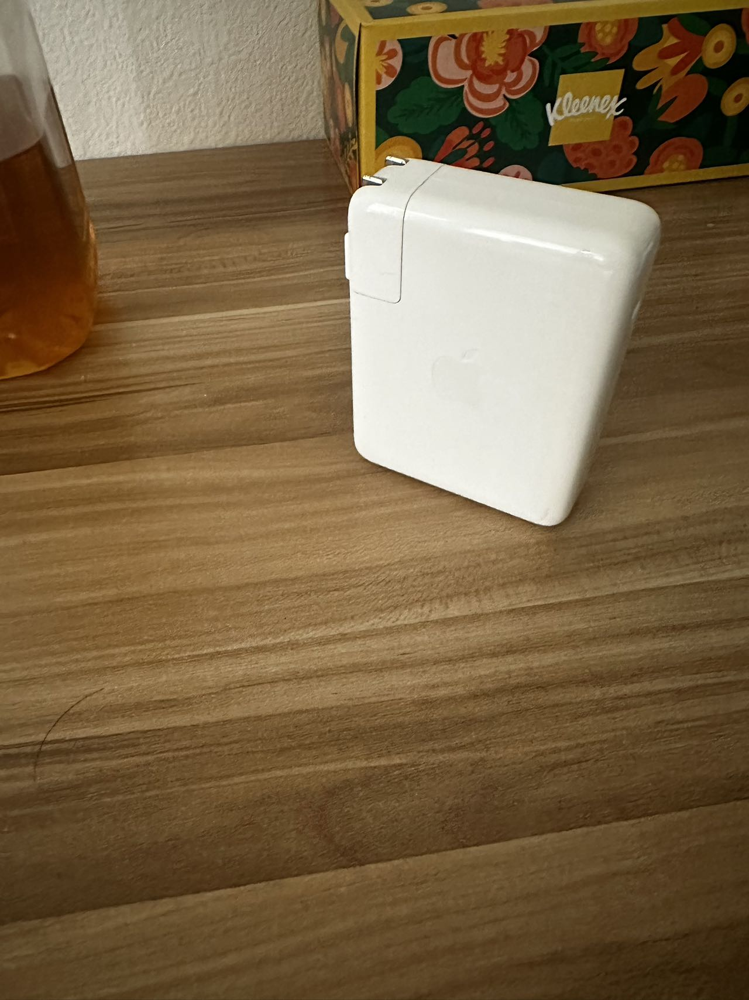
The Original Image
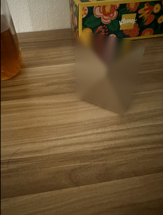
Inpaint From Around + Gaussian Blurred
The first step is to erase the object form the image, this could easily be done using inpaint and Gaussian blur,
while there are still some artifacts (like the diagonal line due to inpainting), it is acceacptable as the object
is no longer recognizable at first glance. However, simple reducing the inpaint or Gaussian blur intensity does not
do the trick of reversing the cube back into object, there are two problems: the physical shape is decomposed under inpainting
and illumination also looks weird, to address those two problems, I found a method called adaptive region sampling.
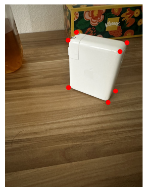
Step 1: Manual Annotatation
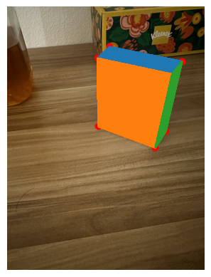
Step 2: Finding the Visible Surface
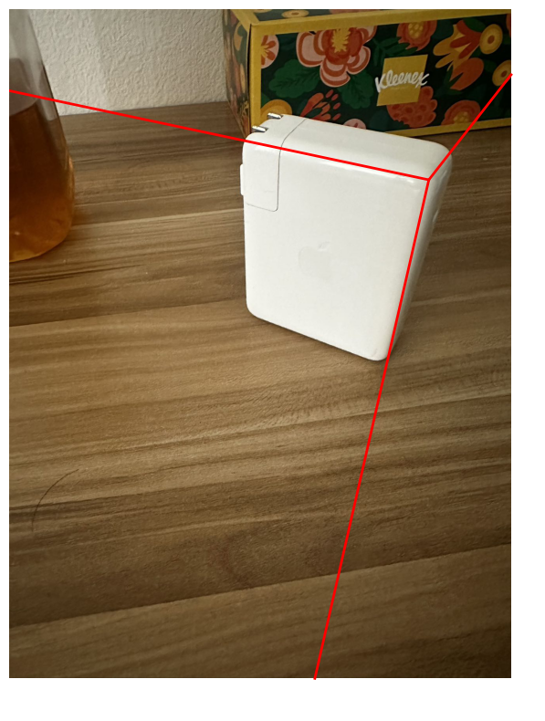
Step 3: Extend the Edge Between Surface
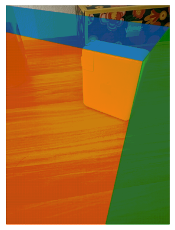
Step 4: Use the Boundary Found to Segment Image Into Three Regions
Step1: The process of this adaptive region sampling is as shown above, we first manually find the corner of the object,
This process cannot be done using Harris Corner detection since the only corner
we are looking for is the corner of our object, Harris would detect other corners in the image
Step2: Using the manually annotated corners, we could get the visible surface, we would use this information
to reconstruct the physical structure of the object
Step3: We extend the edge between the visible surfaces to make them touch the edge of the image.
Those extended lines would help us segment the image
Step4: Using the boundary we found in Step3, we could segment our image into separate regions.
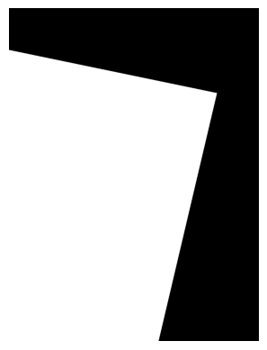
The Region to Sample for 'Orange Surface' Shown in step 2
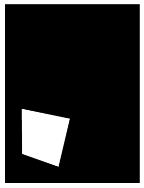
One Example Sample from the Aforementioned Region
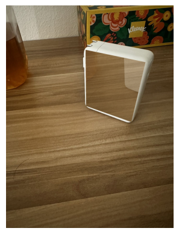
Interpolated 'Orange Surface' From Multiple Samples
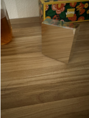
Fully Interpolated Object on a=0.3
After finish the four steps above, we have the location of the visible surfaces and their corresponding selection regions.
We could then sample a patch the same shape as the surface within the region to interpolate onto the target surface.
As shown in the example for 'orange surface' above, we do the sampling multiple times (I used 4-8 in my code),
average the color for each pixel location, and blend it with the pixel of the target surface with a proportion alpha.
This method address the two issues we had before, since we are only sampling in a region that has similar illumination
as our target surface, the result after blending is going to look nice illumination-wise. Since we reserved the physical
structure of visible surface, as blending level become lower, the original object's physical strucure would become more and more clear.
Looking at the a=0.3 midway morphing image, we could see that the texture of the object is similar to the environment,
the upper surface looks like the tissue box and the left surface looks like the wood table.
The illumination looks correct, the right surface appear to be darker than the left surface.
The physical structure of the object is also identifiable, only a little vague.
This shows that our sampling method works!
The Final Morphing Sequence
Using the method above, we could adjust alpha level and produce a sequence of frames as above!
With the 'morphed from background' object as the starting point, we could start to implement the rotation that
rotates it into 3D!
Preliminary: Shoot and Digitize Video
We recorded a short video of a Rubik's Cube with a moving camera. The shoot spans approximately 180 degrees, and the video was taken
with flashlight turned on to minimize the shadow effect (although the result were not as effective as anticipated). Here
are the video that were used as input in this project.
Detecting Corner Features
We will start with harris interest point detector to automatically detect corners (inherently good correspondence choice).
While the math and algorithm is not trivial, I utilize skimage.feature.corner_harris for naive implementation.
Here is a generic algorithm in Harris detector behind the scene:
Compute Gaussian derivatives at each pixel
Compute second moment 2x2 matrix M in a Gaussian window around each pixel
However, the raw output returns more than 45000 corners, which would have cover my entire image if I were to plot it on a figure!
Instead, I apply the Percentile Filter and filter to corners with an h value above 99% percentile.
This is only for visualization because the next subsection in Adaptive Non-Maximal Suppression will sifted out most of them.
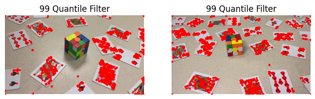
Mask Segmentation with SAM
Segment Anything Model (SAM) is an advanced Segmentation Model developed by Meta. The AutomaticMaskGenerator
provides masks without labeling. Due to time constraint, we did not implement semantic segmentation for automatic labeling.
Instead, bounding box and SamPredictor were used to obtain a mask for the object and a mask for the floor.
Now we have a way to detect features just on the floor surface, we also want some good properties among the features! In particular, we want:
Fixed number of features per image
Spatially evenly distributed features
This motivates Adaptive Non-Maximal Suppression (ANMS), where I find the minimum suppression radius ri for each features.
Then 100 features with highest suppression radius are selected as the final subset. The idea of minimum suppression radius can be summarized
in one phrase as "a distance to the nearest stronger keypoint." :)
The mathematical definition for the minimum suppression radius is \[ r_i = \min_j \, \lvert \mathbf{x}_i - \mathbf{x}_j \rvert, \quad
\text{s.t.} \quad f(\mathbf{x}_i) < c_{\text{robust}} f(\mathbf{x}_j) \]
where xi, xj are corner features, and f(xi), f(xj) are response values from harris corner.
I picked the same crobust = 0.9 as in the paper to ensures that a neighbor must have significantly higher strength.
In the figure below, two arbitrary frames are choosen where I selected the top 100 features with desired properties.
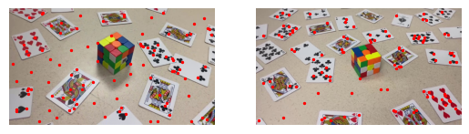
Feature Descriptor
Given all the corner features, we need to somehow describe the feature with feature descriptors.
With rotation and perspective distortion factors involved, we implement Scale Invariant Feature Transform (SIFT) descriptor.
It utilizes gradient field around a feature:
Divide the bigger patch into 16 smaller image patches
For each small image patch, generate a histogram of eight gradient orientations
Stack the 16 patches and obtained a 8*16 = 128 feature descriptor vector (after flattening)
The figure below shows the mechanism behind SIFT.
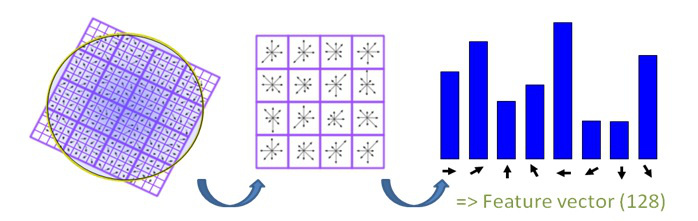
Feature Matching
Lastly, I will need to find pairs of features that look similar.
This is acheived by first flatten feature descriptors into vectors of length 8x16 = 128. Then I can compute the l2 norm among all combinations
between the two images to find the nearest neighbor.
Yet the issue is that if only
one neighbor is used, two patches can be similar by chance or due to noise. Here, I apply Lowe's trick and compute the
ratio between L2 of the closest match and the L2 of the second-closest match.
The idea is that if the ratio is small, then there is only one good match between the two features, which makes it more likely to be
a true match!
With some empirical testing, a Lowe's ratio of 0.55 is used in this project
The figure below demonstrates the result after apply Lowe's trick. Points labels in blue are recognized as good matching features.
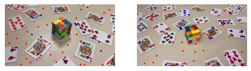
Random Sample Consensus (RANSAC)
With appropriate thresholding, Lowe's trick helps us to remove most of the outliers. However, the algorithm never guarentees that
it will only return true matches. This is where RANSAC comes in, which automatically find the correct homography based on the
set of good matches returned in feature matching section. It does so by filtering out the outliers and keep the largest set of
inliers. The algorithm proceeds as follows:
For some large n
Select four feature pairs at random
Compute the exact homography H
Compute inliers where dist(xj, Hxi) < ε
Keep largest set of inliers
Re-compute least-squares H estimate on all of the inliers
In the first stage, the homography is found on consecutive frames.
Then we compute cumulative homographies using the composition property.
i.e. if H12 warp 1 to 2, H23 warp 2 to 3, then H13 = H23@H12 warp 1 to 3.
Warp to anamorphic illusion!
In previous steps, we actually computed the inverse homography. This avoids the need of splatting in forward warping
and Griddata is used to obtain the color value. Additionally, bwdist is used to implement
distance-based blending. With the weight provided by bwdist, we can create alpha mask with the formula:
\[
a_1 = \frac{w_1}{w_1+w_2}, \quad a_2 = \frac{w_2}{w_1+w_2}
\]
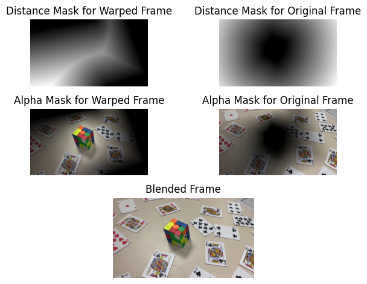
Project Demonstration
The outputted video are in 30 fps, both has around 550~650 frames.
Homography Composition: there are hundreds of compositions that leads to the ghosting effect.
Direct Homography to the reference frame: can't have a wider angle because the correspondences are no longer reliable.